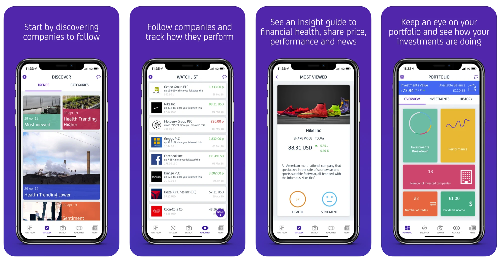

I'M TOM.
A PROGRAMMER, ENGINEER, SCIENTIST, AND MATHEMATICIAN.

A PROGRAMMER, ENGINEER, SCIENTIST, AND MATHEMATICIAN.

I am a recent MEng Civil Engineering graduate with a strong passion for software, relevant training in programming languages like Swift 5 & Python 3 plus experience in iOS app development. I have interests that span across computer science and engineering, such as software engineering, data science, web dev, and machine learning. I also have a great passion for finance and the stock market, doing my own research and investing my own savings on the side. I am always hungry to learn more.
Seeking to further my career as a Software Engineer.
For someone who, since a young age, has been incredibly talented at mathematics having taken Maths, Further Maths, and Physics at A Level before going onto become a Master of Engineering at Newcastle University, programming and computer science seemed like a natural next step in my development. Over the past 18 months I have aquired an immense passion for building digital products such as iOS apps, websites (such as this one), Python Notebooks (more details in the Finance and Investing section below), and web applications in Python.
I wish to develop as many skills in as many areas in software engineering as humanly possible. Ever since I started to learn to code iOS apps over a year ago, I have had a relentless hunger to become expert in Python and Swift (as well as other languages like JavaScript) to build more and more software. My goal is to one day know enough about software engineering, AI, and machine learning to be considered an expert in my field, and develop world-class digital products.
One example of an iOS app I designed and wrote is a music discovery app for DJs. The app alowed users to pick a start and end chord and the app would then display sections of songs with that chord progression so a DJ could fit it in their mix. The user could then preview the song by tapping on the search result:

The user can also save songs to their favourites. I used CoreData to save 'Song' objects with Object Orientated Programming:

Users were also able to signup to an account with password protection, I used the Google Firebase framework to achieve this:

This was an important project for me because it taught me a lot, not only about iOS development, but about computer science in general such as memory management, multithreading, and security. This has since inspiried me to take computer science courses online from Harvard University's CS50 and on sites like Brilliant.org. I found I had a great hunger to keep learning more and more about topics like cryptography (love this because of the maths involved), binary code, AI and machine learning, data science, artifical neural networks and a lot more!

I was approached by Packt Publishing to be a Technical Reviewer for their book iOS 14 Programming for Beginners back in September 2020.

It was good to learn new skills for assessing technical literature using my own skills and expertise in programming for iOS.

Ever since I turned 18 and it became legal for me to open a trading account with a broker nearly 7 years ago I have been obessed with investing in the stock market. I learnt a lot about both technical and fundamental analysis for stock selection from reading books on the topic as well as how to analyse financial data using Python Notebooks: Efficient Frontier for Portfilio Optimisation

And another notebook for implementing Warren Buffett's strategies for stock selection: Buffettology

Getting a read on the markets has always fascinated me, I actively watch Bloomberg News rather than regular news as I feel that the markets paint a better picture for what is going on in the world. Bullish or bearish sentiment helps me get a more genuine understanding for the general outlook than a news anchor reading headlines. Plus, I believe that having a good economic education is absolutely essential for understanding the world around you, so I want to be on my A game when it comes to understanding the economy.
For the third year of my degree, I did an exchange year with Nanyang Technological University (NTU) in Singapore, the top University in Asia. I gained vital experience in how to adapt to a completely new culture and still produce great work for my degree. This provided me with valuable life experience outside the comfort zone that is my home country, allowing me to remain open to all travelling opportunities in the future, as well as how to deal with foreign colleagues with cultural differences.
NTU provided me with world-class teaching in areas I can now relate to the work I produce today, such as Statistics and Numerical Analysis for Engineers, Matrix Algebra for the Computational Analysis of Structural Mechanics, and a Business Enterprise module that was specifically designed to teach me how to cooperate with overseas business colleagues and business leadership.
On top of all these great skills I learnt for my working life, I also had ample chance to travel to the surrounding countries such as Malaysia, Vietnam, Cambodia, Indonesia, Thailand, Japan, and Hong Kong. This was an excellent chance for me to expand my mind and worldview, for example when I visited Vietnam and Cambodia I had virtually no idea of their history, aside from the war the US had with Vietnam in the 20th Century, but I soon discovered that Vietnam used to be a French colony and that there was a horrific genocide in Cambodia in the 70s that I learnt a lot about while travelling around. This all gave me a lot of perspective about the world and how little I knew about it outside of Europe and North America. It has inspired me to travel as much as I can in the future.
During the summer after my first year of University in 2016, I was offered a place for a Summer School with Sichuan University in Chengdu, China, I immediately accepted having never visited China before and was keen to see what it was actually like. This was another awesome experience as I learnt a lot about China first hand rather than through the lens of western media and make local friends.
Visiting China alone was a massive culture shock for me at first, but I love these types of situations as it forces me to adapt to the unfamiliarity of it and grow my comfort zone. For me, this is what makes life exciting, where I believe others might be too afraid, as it is all completely fresh and new! I have this attitude in both my personal and my working life where I am never truly satisfied with what I can learn, I always what to be stepping outside my comfort zone and continuously learn more.
I love taking opportunities, such as this, that I know will help me develop and grow my character and skills, and I always seem to learn and discover far more than I initially anticipated. This summer school allowed me to gain a better understanding of my degree as well as exploring more of the world and opening my mind to more possibilities for what is out there!
To challenge myself and step outside my comfront zone I decided to write and perform a 10 minute talk for TEDx. I gained confidence when public speaking which is usually something I don't often have to do but I beileve is a valuable skill to have.
Made key suggestions to help improve ‘user stories’ for both new and existing users of Dabbl getting them to invest with the app. And designed methods for testing hypotheses for user behaviour.
I am fascinated by AI and machine learning. I was inspiried to take a Udemy course on the topic of machine learning using Tensorflow with the hopes that one day I will be able to apply it to my stock market analysis. Here is a few Colab notebooks I have written using Tensorflow:
Artifical Neural Network MNIST
On the side, I enjoy a lot of sports such as boxing (and other martial arts), rugby and occasionally football.
I like to go to the gym at least 3 times a week.
I do a 6.2km runs at least once a week.
I love skiing and try to go every few years.
I also love to travel, I love experiencing new cultures and meeting new people.
Then please don't hesitate to get in touch either through email or LinkedIn on the links below, and check out both my GitLab and GitHub pages!
CONTACT ME